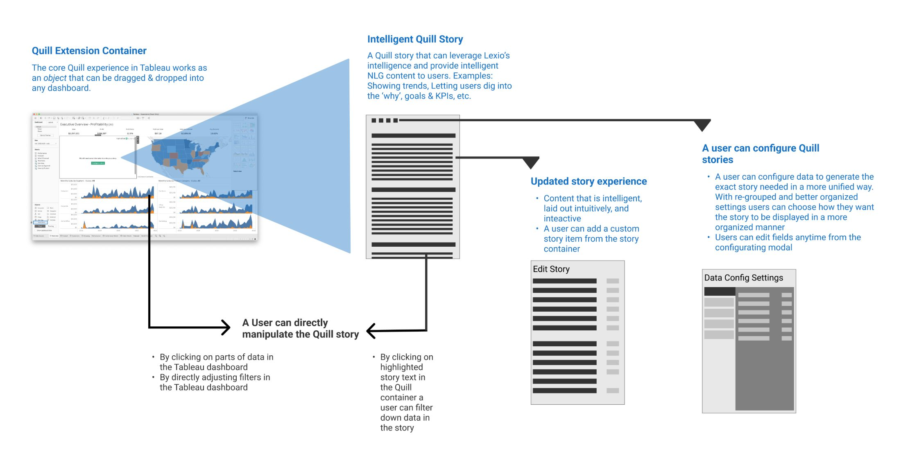
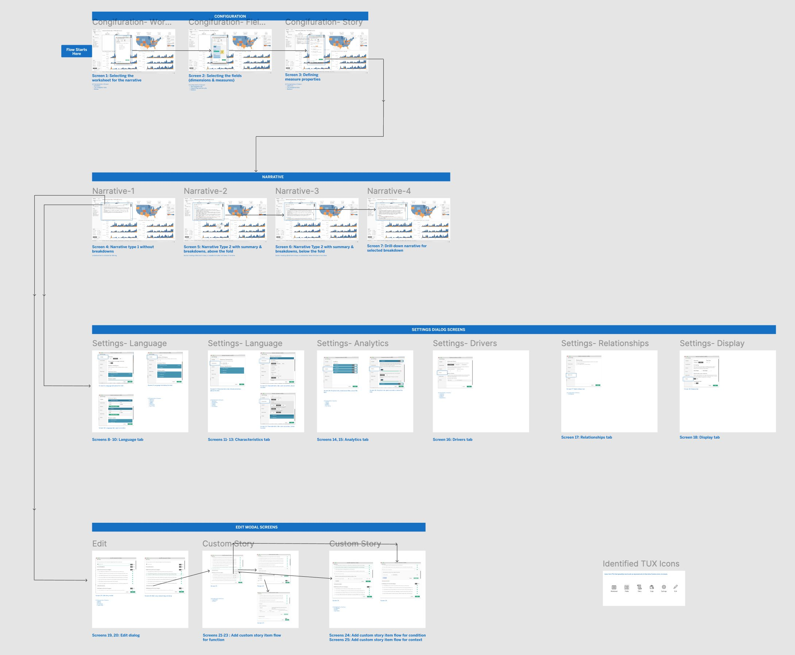

After the DataStories acquisition, I led design for integrating its natural-language generation feature into Tableau. New team, new design system, new work environment — and a hard delivery date for the Tableau Conference. We shipped it in record time, demoed it on stage, and used live conference feedback to shape the next iteration.
As the lead designer, I integrated an NLG-based data storytelling feature from DataStories into Tableau — overcoming the challenge of a new team and a new design system. I mapped and redesigned the feature to align with Tableau's UX principles and collaborated closely with the CX team. The project was delivered in record time and showcased at the Tableau Conference, receiving positive feedback. In-person user testing at the conference produced valuable insights that fed directly into the next iteration.
When DataStories was acquired, I was appointed lead designer for integrating its NLG-based data storytelling feature into Tableau. The transition meant adapting to a new team, a new design system, and a new work environment — simultaneously. Despite the constraints, I leaned hard on core UX design principles to keep the integration coherent, fast, and trustworthy.
Before redesigning anything, I built an experience map of Quill, the Narrative Science product that lived as a Tableau plugin pre-acquisition. Documenting the existing object model — the Quill Extension Container, the Intelligent Quill Story, story configuration affordances, and the moments a user could directly manipulate the story — made it clear what to preserve and what to rebuild.

From the Quill map I designed the full Data Stories flow native to Tableau — Configuration → Narrative → Settings → Edit — across 25+ screens. The flowchart below captures the screen-by-screen structure: configuring the worksheet, selecting fields and measures, generating the narrative, dialing in language / characteristics / analytics / drivers / relationships / display, and editing custom stories.

The shipped experience embeds NLG-generated narratives next to Tableau visualizations — describing trends, anomalies, and comparisons in plain language while staying inside Tableau's familiar workspace.
Below is a video walkthrough of the Figma prototype, narrated by my PM partner. This is the recording that was shown at Salesforce CKO and the Tableau Conference — the same flow that won the room over and triggered the in-person testing sessions that followed.
The successful integration of the NLG-based data storytelling feature into Tableau was a result of collaborative design, strict adherence to UX principles, and effective stakeholder management. The project not only extended Tableau's capabilities — it demonstrated how agility and user-centered design can deliver high-impact solutions under acquisition-speed constraints.
Detailed feedback from in-person user testing at the Tableau Conference was brought back to the team for further improvements — a tight loop between live audience reaction, observed task performance, and the next design iteration.
Acquired features live or die on their first integration. Move too literally and the host product rejects it. Move too far and you've lost the thing you bought. The Data Stories integration worked because we kept the NLG behavior intact while rebuilding the surface in Tableau's vocabulary.
Compressed timelines reward strong relationships, not strong opinions. The reason we shipped in record time wasn't speed — it was trust. Tight loops with the new team, the CX team, and stakeholders meant fewer rework cycles and faster decisions.
In-person testing at a real event is undervalued. The conference floor produced more honest, in-context feedback in two days than weeks of remote sessions would have. It's a model I've reused since.